This page mainly contains my notes from a) Java: The Complete Reference, and b) Head
First: Servlets and JSP
Chapter 34: Java Beans
What is a Java Bean
- A Java Bean is a software content that has been designed to be reusable in a variety of different
environments. There is no restriction in the capability (in terms of complexity) of a Java Bean. A bean may
perform a simple function or a complicated function.
- At a basic level, JavaBeans are simply Java classes which adhere to certain coding conventions. Specifically, classes that have:
- At a basic level, JavaBeans are simply Java classes which adhere to certain coding conventions. Specifically, classes that have:
publicdefault (no argument) constructors- allow access to their properties using accessor (getter and setter) methods
- implement
java.io.Serializable - all JavaBean instance variables should be private
What is the difference between a Java Bean and a POJO
- A JavaBean follows certain
conventions. Getter/setter naming, having a public default constructor, being
serializable etc. See JavaBeans
Conventions for more details.
- A POJO (plain-old-Java-object) isn't rigorously defined. It's a Java object that doesn't have a requirement to implement a particular interface or derive from a particular base class, or make use of particular annotations in order to be compatible with a given framework, and can be any arbitrary (often relatively simple) Java object.
- All JavaBeans are POJOs but not all POJOs are JavaBeans.
- A POJO (plain-old-Java-object) isn't rigorously defined. It's a Java object that doesn't have a requirement to implement a particular interface or derive from a particular base class, or make use of particular annotations in order to be compatible with a given framework, and can be any arbitrary (often relatively simple) Java object.
- All JavaBeans are POJOs but not all POJOs are JavaBeans.
What is the difference between a Java Bean and a Spring Bean
- A Spring bean is basically an object managed by Spring. More specifically, it is an object that is
instantiated, configured and otherwise managed by a Spring Framework container. Spring beans are defined in
Spring configuration files (or, more recently, with annotations), instantiated by Spring containers, and
then injected into applications.
- Note that Spring beans need not always be JavaBeans. Spring beans might not implement the
- The reason Spring managed objects are referred to as beans is because in the very early versions, Spring was intended only for use with JavaBeans. That is no longer the case of course: Spring can manage just about any object, even if it doesn’t have JavaBean type characteristics such as default constructors or mutator methods (getters and setters). None the less, the term ‘Spring beans’ has stuck. Can Spring beans be POJOs? Yes, and they usually are (although they don’t have to be – e.g. Spring can be used with ‘heavyweight’ Java objects, such as EJBs). Can Spring beans be JavaBeans? As I have said, yes and again they often are but don’t have to be.
- Note that Spring beans need not always be JavaBeans. Spring beans might not implement the
java.io.Serializable interface, can have arguments in their constructors, etc.
This is the very basic difference between JavaBeans and Spring beans.
- The reason Spring managed objects are referred to as beans is because in the very early versions, Spring was intended only for use with JavaBeans. That is no longer the case of course: Spring can manage just about any object, even if it doesn’t have JavaBean type characteristics such as default constructors or mutator methods (getters and setters). None the less, the term ‘Spring beans’ has stuck. Can Spring beans be POJOs? Yes, and they usually are (although they don’t have to be – e.g. Spring can be used with ‘heavyweight’ Java objects, such as EJBs). Can Spring beans be JavaBeans? As I have said, yes and again they often are but don’t have to be.
A JavaBean on its own is not terribly interesting, it's just a Java class that conforms to some standards.
However, conformance with this standard is one of the pillars on which the Java EE
framework is built and it comes up in quite a few places. FYI, there are a few different types of EJB listed
below:
- Entity Beans:
- Stateful Session Beans
- Stateless Session Beans
- Singleton Beans
You might want to read/write objects to/from an underlying database. You could use JDBC/SQL to do
this but you could also use a persistance framework. The Java EE spec includes a spec for
persistance whereby you declare your class to be an "entity bean" and have Java automatically
generate database tables and logic to map between entries in your database and objects in your
program. The actual implementation is provided by a lower level library such as Eclipselink,
Toplink, Hibernate etc. but the Java API abstracts away any differences between them.
Session beans represent logic while entity beans represented persistent objects. These days entity beans aren't used anymore in favour to JPA entities.
Session beans represent logic while entity beans represented persistent objects. These days entity beans aren't used anymore in favour to JPA entities.
Imagine that you want to create an instance of a Java class which exists on separate JVM. The JVMs
might be running on the same physical machine but equally, may be on separate machines communicating
over a network. Using a Java EE application server, you can create a class which can be instantiated
by clients of the app server. These clients can instantiate a class which will act just like a
normal object but any methods that are invoked on the object get executed on the server with the
results being passed back to the caller. It's basically an object oriented form of remote procedure
calls.
This is a minor variation on stateful session beans. With stateful beans, if the server has 1000
clients then it will potentially have to create 1000 instances of the bean and remember which
instance belongs to which client. With stateless beans, the server creates a pool of beans and
doesn't bother to remember which client owns which bean. When a client invokes a method, the server
picks a bean from the pool and uses it, returning it to the pool on completion. You use stateful
session beans when you want the server to remember details about each client, you will use stateless
beans when you don't need to remember client specific details. Note that the stateless beans may
well have state, it's just that this state won't be of interest to the client.
//TODO..?
Introspection
Introspection is the automatic process of analyzing a bean's design patterns to reveal the bean's
properties, events, and methods. This process controls the publishing and discovery of bean operations and
properties.
There are two ways in which the developer of a Bean can indicate which of its properties, events, and methods should be exposed. With the first method, simple naming conventions are used. These allow the introspection mechanisms to infer information about a Bean. In the second way, an additional class that extends the
The introspection mechanism finds all of the public methods of a Bean. Protected and private methods are not presented.
There are two ways in which the developer of a Bean can indicate which of its properties, events, and methods should be exposed. With the first method, simple naming conventions are used. These allow the introspection mechanisms to infer information about a Bean. In the second way, an additional class that extends the
BeanInfo interface is provided that explicitly supplies this information.
The introspection mechanism finds all of the public methods of a Bean. Protected and private methods are not presented.
Design Pattern for Properties
A property is a subset of a Bean’s state. The values assigned to the properties determine the
behavior and
appearance of that component. A property is set through a setter method. A property is obtained by a getter
method. There are two
types of properties:
- Simple:
A simple property has a single value. It can be identified by the following design patterns, where
Nis the name of the property andTis its type:
public T getN()
public void setN(T arg)
A read/write property has both of these methods to access its values. A read-only property has only a get method. A write-only property has only a set method. - Indexed:
An indexed property consists of multiple values. It can be identified by the following design
patterns, where
Nis the name of the property andTis its type:
public T getN(int index);
public void setN(int index, T value);
public T[] getN();
public void setN(T values[]);
Design Pattern for Events
Beans use the delegation event model that was discussed earlier in this book. Beans can generate events and
send them to other objects. These can be identified by the following design patterns, where
These methods are used to add or remove a listener for the specified event. The version of
//TODO: Example code of how to actually use a listener to listen for an event and take action based on it.
T
is the type of the event:
public void addTListener(TListener eventListener)
public void addTListener(TListener eventListener) throws java.util.TooManyListenersException
public void removeTListener(TListener eventListener)
These methods are used to add or remove a listener for the specified event. The version of
addTListener() that does not throw an exception can be used to multicast an event, which
means that more than one listener can register for the event notification. The version that throws TooManyListenersException
unicasts the event, which means that the number of listeners can be restricted to one. In either
case, removeTListener() is used to remove the listener.
//TODO: Example code of how to actually use a listener to listen for an event and take action based on it.
These are my notes from the book - Head First: Servlets and JSP
Index:
Chapter 1: Why use Servlets and JSPs
Chapter 2: Web App Architecture
Chapter 3: Mini MVC Tutorial
Chapter 1: Why use Servlets and JSPs
Chapter 2: Web App Architecture
Chapter 3: Mini MVC Tutorial
Chapter 1: Why use Servlets and JSPs
- To prevent deployment problems that come with building stand alone apps, we instead deploy our apps to the
browser.

Terminology:
Terminology:
- Web Server:
A web browser lets a user request a resource. The web server receives the request, finds the resource,
and
then sends it back to the user. A resource can be anything - HTML page, image, PDF File. If the
requested
resource is not found, the server replies with a
404-Not Founderror code.
- A web server can refer to either the physical machine (hardware) or the web server application (software). - Web Client: Both the human and the browser application (Mozilla, Chrome) being used are referred to as the Web Client. A web browser can communicate with the web server. It can interpret the HTML code that is send as a part of the server's response and render that web page. Hence a Web Client (browser) lets the user request something from the server and shows the user the result of that request.
- HTML: When a server answers a request, the server usually sends some type of content for the
browser to
display. This content is written in HTML.
- Two important tags in HTML are:formandinput - HTTP: Most of the conversations held on the web between clients and servers are held using HTTP
Protocol, which allows for simple request- response type conversations. The client sends an
HTTP Requestand the Server responds with aHTTP Response.
HTTP runs on top of TCP/IP. The structure of and HTTP conversation is a simple Request/Response.
Key elements of the request stream are:- HTTP Method Name(the action to be performed): The method name tells the server the kind of
request that is being made, and how the rest of the message will be formatted. The
HTTPprotocol has several methods, but we mostly useGETandPOSTmethods.GET: Gets a resource (HTML page, image, file,..) from the server and sends it back to the Client. You can also send some data with aGETrequest, but this is not recommended. Firstly, because the number of characters that are sent via aGETrequest are limited and secondly all the data sent in aGETrequest is visible in the URL. The "?" separates the path and the parameters. Together, the entire String is the request that is the URL that is sent with the request.
POST: With POST, you can request something and at the same time send form data to the server. For eg., if the user has completed a long form, you want this data to be stored into a database. In this case you would use aPOSTmethod. The data to be sent back to the server is known as the "payload" or the "message body".
- The page to access (a URL)
- Form parameters (like arguments to a method). These are sometimes also called "query strings"
- A status code (for whether the request was successful)
- Content-type (text, picture, HTML). Also known as MIME type
- The actual content
- An HTTP response can contain HTML. HTTP adds a Header to the response generated by the server. This Header information helps the client process the response. Inside this response can be a
<html></html>that the client then renders as the HTML page that we finally see.
All the pieces in one page:
- HTTP Method Name(the action to be performed): The method name tells the server the kind of
request that is being made, and how the rest of the message will be formatted. The
- Dynamic Content: The Web Server Application serves only static pages, but a spearate "helper" application that the web server can communicate with can build non-static, just-in-time web pages. Just-in-time web pages do not exist before the request comes in. Once the request comes in, the helper app "writes" the HTML and the web server sends the page back to the Client as if it were a static web page.
- Saving data on the Server: A WEb Server cannot process form data. When the web server sees a request for a helper app, it assumes that all of the parameters are emant for the Helper app and hence passes all of the parameters to it


What is a TCP Port:
A TCP port is a 16-bit number that uniquely identifies the software that is running on the hardware. They are NOT physical ports on a system. They are just numbers representing an applications. As per the standard, the HTTP Server Software runs on Port 80. Without port numbers, the Server would have no way of telling which application/software a Client wants to connect to.
- There are a bunch of other ports that are pre-defined to connect to specific services.
A TCP port is a 16-bit number that uniquely identifies the software that is running on the hardware. They are NOT physical ports on a system. They are just numbers representing an applications. As per the standard, the HTTP Server Software runs on Port 80. Without port numbers, the Server would have no way of telling which application/software a Client wants to connect to.
- There are a bunch of other ports that are pre-defined to connect to specific services.
Two things the Server won't do on its own:
What is a Servlet? And what is JSP?
- The Helper App in Java is known as a Servlet. So a Servlet is just some Java code. But when the web server calls the helper Servlet, it expects HTML code in return. This is done by using using the
- To solve this problem, JSPs were introduced. This allows us to add Java code to HTML instead of writing HTML code in a Java class. The JSP page contains java variables that calls the main Java code and creates the completed HTML page as a JIT web page.
- The Helper App in Java is known as a Servlet. So a Servlet is just some Java code. But when the web server calls the helper Servlet, it expects HTML code in return. This is done by using using the
PrintWriter.println()
method. The HTML code that is to be returned to the web server is included as a String type
argument in the println() method. As you can hope, stuffing properly formatted HTML tags
into
the println()is not a viable solution. For eg. you will have to manually escape every quote
character (") because Java treats them as end of string character. And HTML happens to use a ton of
quotes
to specify the attribute values and what not.
- To solve this problem, JSPs were introduced. This allows us to add Java code to HTML instead of writing HTML code in a Java class. The JSP page contains java variables that calls the main Java code and creates the completed HTML page as a JIT web page.
Chapter 2: Web App Architecture
What is a Container?
- Servlets don't have a
- Apache is you web server application. Tomcat is your Container. When your web server application gets a request for a
- It's the Container that gives the Servlet the HTTP Request and Response, and it's the Container that calls the servlet's methods like
- Servlets don't have a
main() method. They are under the control of another Java application
known as the Container.
- Apache is you web server application. Tomcat is your Container. When your web server application gets a request for a
Servlet (as opposed to, say, a plain static HTML page) the server hands the
request not to the servlet itself, but to the Container in which the servlet is deployed.
- It's the Container that gives the Servlet the HTTP Request and Response, and it's the Container that calls the servlet's methods like
doGet() and doPost().
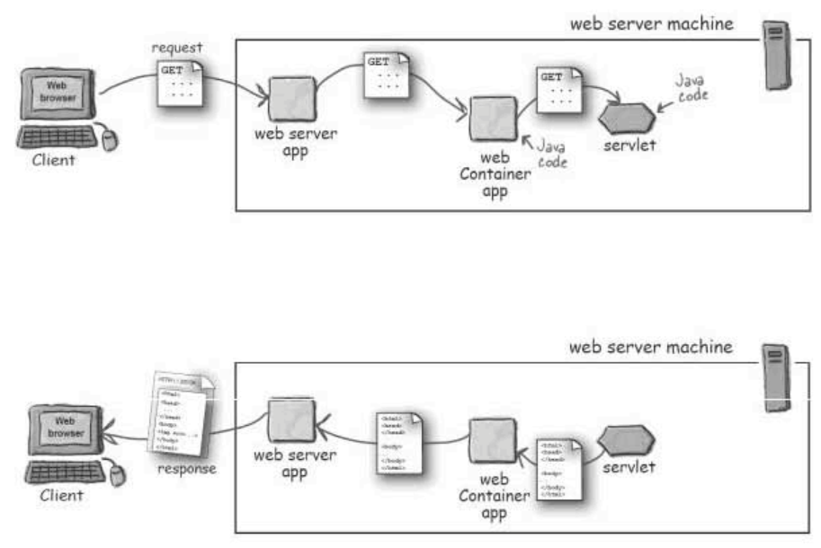
What does the Container give you?
- Communication Support: The Container(Tomcat) provides an easy way for your Servlets to talk to your Web Server. You don't have to build a ServerSocket, listen on a port, create Streams, etc. The Container knows the protocol between the Web Server and itself, so that your Servlet does not have to worry about, say, the API between the Apache Web Server and your own web application code.
- Lifecycle Management: The Container controls the life and death of you servlets. It takes control of loading the classes, instantiating and initializing the servlets, invoking the servlets methods, and making servlets instances available for garbage collection. With the Container in control, you do not have to worry about the resource management.
-
Multithreading Support: The COntianer automatically creates a new Java thread for every
servlet request that it receives. When the Servlet's done running the HTTP
service()method for that Client's request, the thread completes (dies). But you are still responsible for Thread safety and other synchronization issues. It's just that the work involved in creating and deleting threads is reduced. - Declarative Security: XML Deployment Descriptors allow you to configure Security without having to hard-code it into any of your servlets or other classes.
- JSP Support: Container also takes care of translating the JSP code into real Java.
How the Container handles a request:
Step 1: User clicks on a link that has a URL to a servlet instead of a static web page
Step 1: User clicks on a link that has a URL to a servlet instead of a static web page
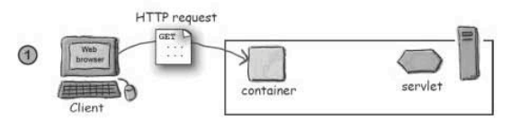
Step 2: The Container "sees" that the request is for a Servlet, so the container creates two
objects:
- HttpServletRequest
- HttpServletResponse
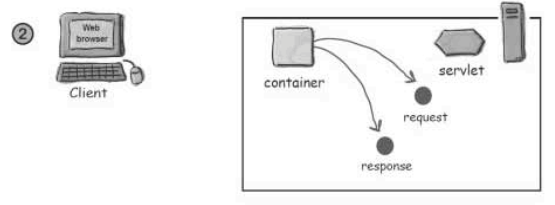
Step 3: The Container finds the correct Servlet based on the URL in the request, creates or
allocates a thread for that request, and passes the request and response objects to the Servlet thread.
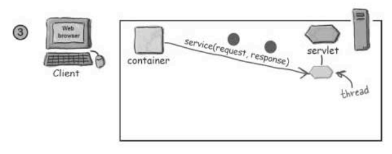
Step 4: The Container calls the Servlet's service() method. Depending on the type of
the request, the service() methods calls either the doGet() or
doPost() methods. For this example, we assume that the request was a HTTP GET method.
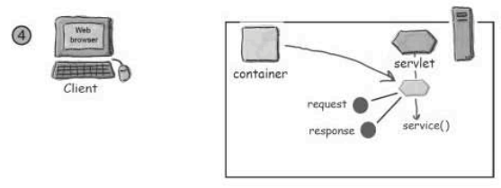
Step 5: The doGet() method generates the dynamic page and stuffs the page into the
response object. Remember that the Container still has a reference to the Response object.
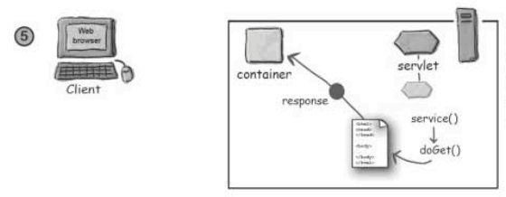
Step 6: The thread completes, the container converts the response object into an HTTP Response,
sends it back to the client, and then deletes the request and the response object.
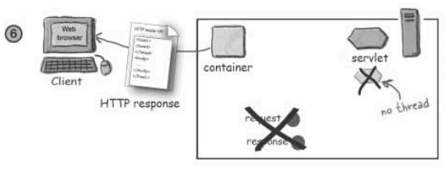
What makes a Servlet a Servlet:
Note that a Servlet class (in this case
Note that a Servlet class (in this case
Ch2Servlet) does not have a main() method.
It only has a doGet() method.
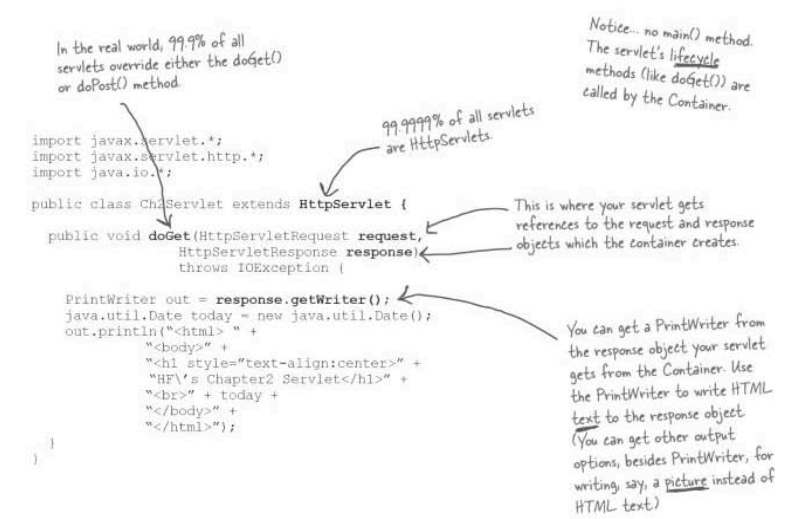
When a Client clicks on a URL containing a Servlet in Step 1, how does the Container know which Servlet
to call?
A Servlet can have 3 names:
- Why do we do this:
A Servlet can have 3 names:
- Public URL Name: The name encoded into the HTML so that when the user clicks a link that is supposed to go to that servlet, this public URL is sent to the Server in the HTTP Request.
- File Path Name (XXXX.class name): This (XXXX) is the ACTUAL name of the .class file that is stored on the server.
- Deployment Name: It is a secret internal name (not known to the Client) that is given to the .class file. This can be the same as the File Path Name, but can be something completely different as well.
- Why do we do this:
- Flexibility: We can change the path of the .class file without breaking the path of every file that referenced this class file
- Security: We do not want the Client ot know the internal directory structure of the Server.
How do we do this mapping: Deployment Descriptors
When you deploy your servlet into your web Container, you will create an XML document called the
- We use two XML elements to map URLs to Servlets - one to map the Client-known Public URL Name to our own internal deployment name, and the other to map our own internal deployment name to the fully-qualified class-name
- The two DD elements for URL Mappings are:
When you deploy your servlet into your web Container, you will create an XML document called the
Deployment Descriptor to tell the container how to run your Servlets and JSPs.
- We use two XML elements to map URLs to Servlets - one to map the Client-known Public URL Name to our own internal deployment name, and the other to map our own internal deployment name to the fully-qualified class-name
- The two DD elements for URL Mappings are:
<servlet>: maps internal name to fully-qualified class name<servlet-mapping>: maps internal name public URL name
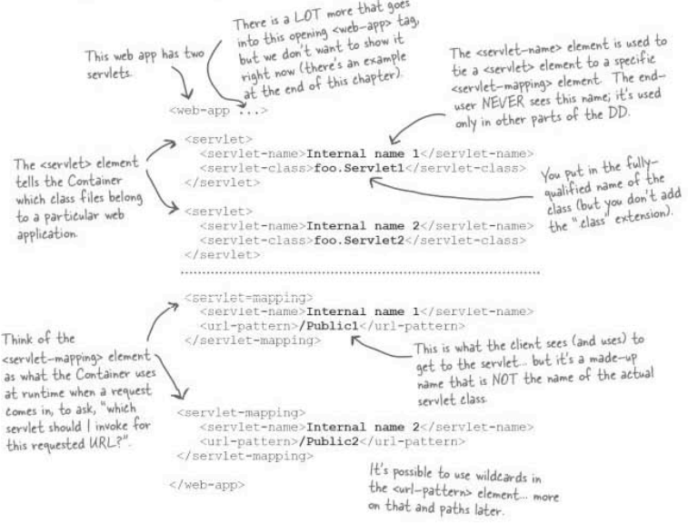
- Note that the <servlet-class> tag still contains only the class name and not the complete
path of the the .class file. This is because the Container has a specific place that it will look for all
Servlets for which you have specified a mapping in the DD.
What is MVC: Media-View-Controller
- The essence of MVC is that you separate the business logic from the presentation, but put something in between them so that the business logic can stand on its own as a reusable Java class, and doesn't have to know anything about the view. In other words, the business logic should never go into the Servlet. Because the Servlet contains the JSP page, it means that the business logic is tied to the JSP page. We cannot re-use the business logic for some other kind of view, like a GUI. The business logic should always be in a standalone Java class that can be reused.
- Model-View-Controller takes the business logic out of the Servlet and puts it in a "Model" - a reusable plain old Java class. The Model is a combination of the business data and the methods that operate on the data.
- The essence of MVC is that you separate the business logic from the presentation, but put something in between them so that the business logic can stand on its own as a reusable Java class, and doesn't have to know anything about the view. In other words, the business logic should never go into the Servlet. Because the Servlet contains the JSP page, it means that the business logic is tied to the JSP page. We cannot re-use the business logic for some other kind of view, like a GUI. The business logic should always be in a standalone Java class that can be reused.
- Model-View-Controller takes the business logic out of the Servlet and puts it in a "Model" - a reusable plain old Java class. The Model is a combination of the business data and the methods that operate on the data.
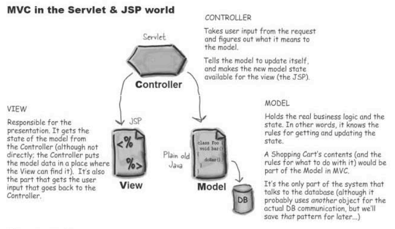
- Thus for each Servlet, there will be a new business logic class that will be the Model, a JSP
page that will be the View, and the original Servlet, bereft of any logic or HTML, that will
form
the Controller part of the puzzle.
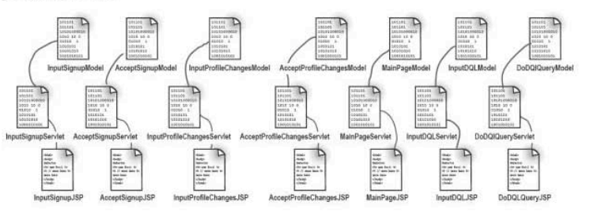
- But now the problem is that there are a gazillion little Servlets, and all they are doing is updating the
Model and then displaying the View. Lot of code duplication apparently...
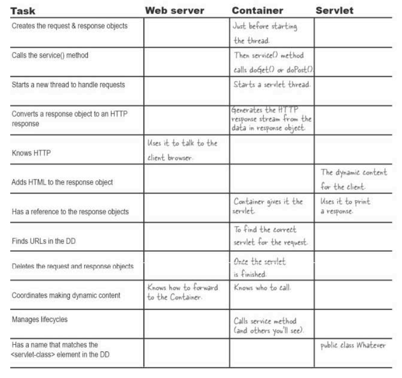
How doe J2EE fit into all of this?
The Java 2 Enterprise Edition is kind of a super-spec - it incorporates other specifications, including the Servlets 2.4 Spec and the JSP 2.0 spec. That's for the Web Container. But the J2EE 1.4 spec also includes the Enterprise JavaBean 2.1 specification, for the EJB Container. In other words, the web container is for the web components (servlets and JSPs) whereas the EJB COntainer is for the business components.
- A fully-compliant J2EE server must have both a web Container abd an EJB Container (plus other things including a JNDI and JMS implementation). Tomcat is just a web Container!(?). It is still compliant with the portions of J2EE spec that address the web container.
The Java 2 Enterprise Edition is kind of a super-spec - it incorporates other specifications, including the Servlets 2.4 Spec and the JSP 2.0 spec. That's for the Web Container. But the J2EE 1.4 spec also includes the Enterprise JavaBean 2.1 specification, for the EJB Container. In other words, the web container is for the web components (servlets and JSPs) whereas the EJB COntainer is for the business components.
- A fully-compliant J2EE server must have both a web Container abd an EJB Container (plus other things including a JNDI and JMS implementation). Tomcat is just a web Container!(?). It is still compliant with the portions of J2EE spec that address the web container.
Chapter 3: Mini MVC Tutorial
The process for creating a Enterprise
Application in IntelliJ can be found here.

Here is the architecture of the Web App:
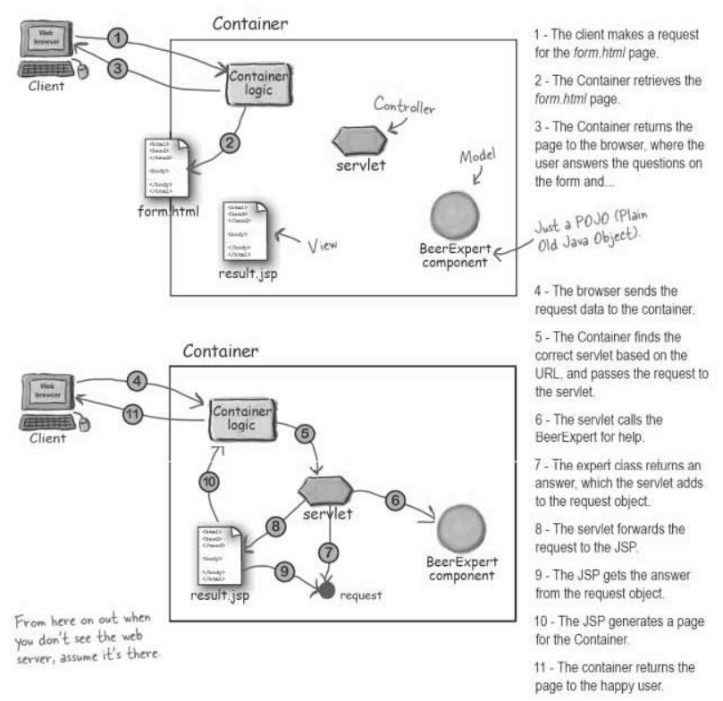
Creating the Development Environment:
-index.jsp is the file that contains the first page that the user sees when they login into
the http://localhost:8080/BeerV2_war_exploded/. Changing the name of index.jsp
to some other name causes the app to stop working for some reason.
- The web.xml is the Deployment Descriptor that we looked at in the previous chapter.
This is an example of Tomcat Log generated when the Web-App was deployed successfully.
Creating the Deployment Environment:

Let's finish the app now, one step at a time:
Step 1: The Client makes a request for the form.html page
Step 2: The Container retrieves the form.html page
Step 3: The Container returns the page to the browser where the user answers the question on the form and Clicks Submit
Clicking the SUBMIT button causes the HTML form to send a
Step 4: The browser sends the request data to the Container
Now the Container has to figure out which is the actual Class to which the
Step 5: The Container finds the correct Servlet and passes the
request to the Servlet. This class
acts as the Controller, calling the Model
Step 6: The Servlet calls the BeerExpert class for help.
Step 7: The BeerExpert class returns an answer that the Servlet class
adds to the request
object.
The Container provides a mechanism called "Request Dispatching" that allows one container-manged component to call another container-managed component. This is what we use here - the Servlet gets the info from the model, saves it in the request object, then dipatches the request to the JSP.
Step 8: The Servlet forwards the request to the JSP.
Step 9: The JSP gets the answer from the request object.
Step 10: The JSP generates a page for the Container.
Step 11: The Container returns the page to the User.
Step 2: The Container retrieves the form.html page
Step 3: The Container returns the page to the browser where the user answers the question on the form and Clicks Submit
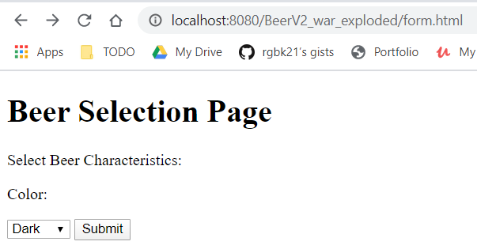
Clicking the SUBMIT button causes the HTML form to send a
POST request to the server. This
request is sent to the SelectBeer.do file (Line 9). Remember that there is no actual class
named such.
It's mapped to an internal Servlet name using the Deployment Descriptors.
Now the Container has to figure out which is the actual Class to which the
SelectBeer.do maps.
For this, the Container looks in the web.xml file (Deployment Descriptor). The Container finds
out that the SelectBeer.do file maps to the Ch3 Beer internal name, which in turn
maps to the com.example.web.BeerSelect Java Class. Now the Container knows which Servlet to
call.
BeerExpert for the business logic, and the View
result.jsp for the reponse.
Step 6: The Servlet calls the BeerExpert class for help.
The Container provides a mechanism called "Request Dispatching" that allows one container-manged component to call another container-managed component. This is what we use here - the Servlet gets the info from the model, saves it in the request object, then dipatches the request to the JSP.
Step 8: The Servlet forwards the request to the JSP.
Step 10: The JSP generates a page for the Container.
Step 11: The Container returns the page to the User.